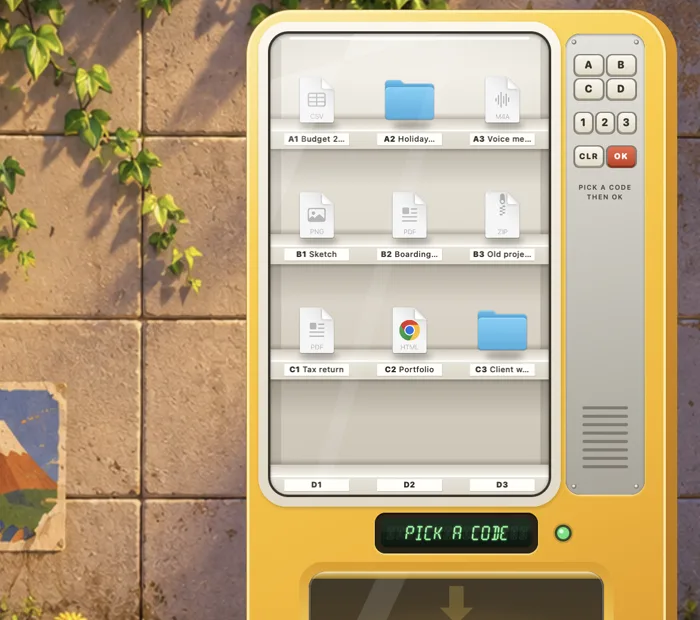

Free Mac app · macOS 14 or later · Version 1.0
Desktop Vending Machine Keypad
Your files on little shelves. Type a code and one drops.
A sunny little vending machine that stands on your desktop. Drop files on the window and each one stands on a shelf with a code and its name on a tag. Type the code on the keypad and that file drops into the bin for you to take out.
